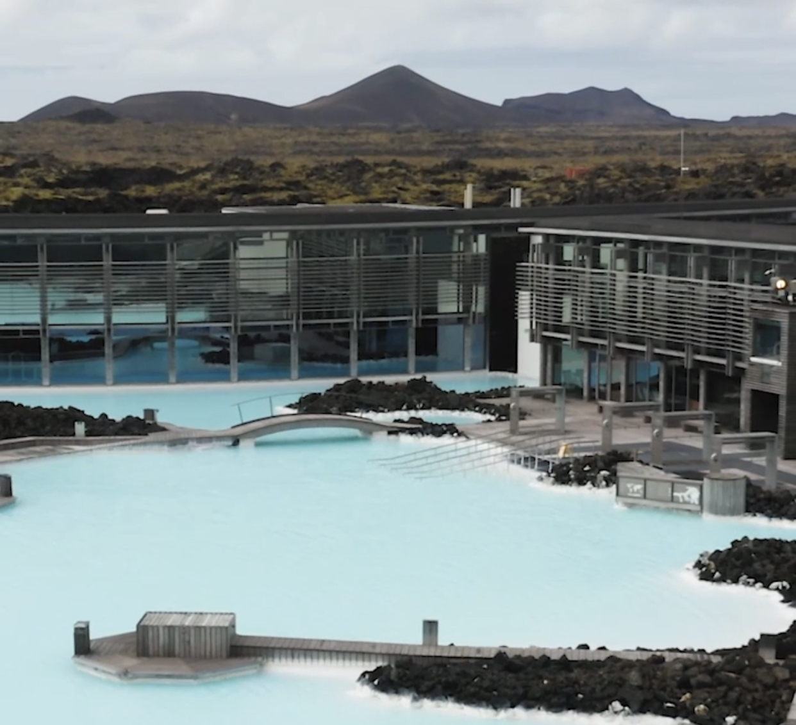

Blue Lagoon

ここからはBlue Lagoonについて説明していきます。
Blue Lagoonは世界最大級の人口温泉の一つです。
温泉だけでなくレストランや宿泊施設などもあります。リンクはこちらです。#Blue Lagoon
ホームページがお洒落なんですよね。見たら絶対行きたくなります笑
僕と友達は、空港を出てレンタカーを借りてからBlue Lagoonに直行しました。
ロンドンからアイスランドまでのフライトだったんですが、疲れるやろうなって思ってたんで、
疲れを取るのと、景気づけに1つ目のスポットに選びました。
アイスランド旅行って思ってるより疲れるので、
旅の疲れを癒すのに最後のスポットとして行くのもありだと思います。
Blue Lagoonは世界最大級の人口温泉の一つです。
温泉だけでなくレストランや宿泊施設などもあります。リンクはこちらです。#Blue Lagoon
ホームページがお洒落なんですよね。見たら絶対行きたくなります笑
僕と友達は、空港を出てレンタカーを借りてからBlue Lagoonに直行しました。
ロンドンからアイスランドまでのフライトだったんですが、疲れるやろうなって思ってたんで、
疲れを取るのと、景気づけに1つ目のスポットに選びました。
アイスランド旅行って思ってるより疲れるので、
旅の疲れを癒すのに最後のスポットとして行くのもありだと思います。
なので、旅の初めか終わりに行く人が多いと思います。
写真内右上のReykjavik(首都)までは車で約1時間の距離です。
アイスランドの運転はめっちゃ簡単です。メインは国道1号線で、国を一周してるだけです笑
なので運転で心配することはあんまりないです。
強いて言うなら、左運転右車線と制限時速が80kmぐらいなだけです笑
あとは急に天気が変わるので、吹雪に巻き込まれるかもしれませんが、、
羊の群れが道路を横断することもあるので、引いてしまわないように！！
道路が一車線しかないので、前の車を抜かすときは反対車線に出て抜かさないとダメです笑
運転事情はざっとこんな感じです笑
運よく当日にチケットを買える可能性はありますが、
当日チケットを購入できない可能性の方が高いと思います。
と言うのも、チケットは日時予約制で、混み具合(時期、時間帯)によって料金は変動します。
下でホームページでのチケットの買い方を紹介します。
ホームページの構成もシンプルなので分かりやすいかと思います。
チケット購入方法
"Book now"を選択します。
この時期だと約6000円からと書いてますね。
さすが、なかなかの値段しますね笑
ここにも記載されてる通り、
価格は日と時間によって変わります。
2歳から入場可能で、13歳までは無料で入れます。
ロッカー等は付き添いの大人とシェアになります。
日付に色が付いていない日は選択できないので、
ご注意下さい。
写真で選択した日は全ての時間帯で同じ値段ですが、
日によっては時間で値段が違うこともあります。
多少遅れても大丈夫ですが、
遅れすぎると入れないかもしれせん。
comfortとpremiumの違いは以下の通りです。
この4つのサービスが含まれています。。
2個目のマスク、スリッパ、ローブ、レストランとワイン
以上がついてきます。
この画面ではその他のオプションを付けるか選択できます。
付けない方は"skip and continue"で次の画面に移動できます。
予約完了のメールは登録したメールアドレスに
送られるので保管しておいて下さい。
泥パック、ドリンクコーナー
泥パックは温泉に入って左手にあります。泥ちょうだいって言えばくれます笑
やっぱり女性には人気がありました。僕らはそれよりもドリンクを貰うことに必死でした。
写真はドリンクコーナーです。泥パックの所も写真撮ればよかったです。
ドリンクの種類は思ってたよりも豊富でした。もちろんアルコールもあります。
僕はビールを頼んで、友達はコーラゼロを頼んでた気がします。
でも1人何杯までって決まってたと思います。
ドリンクコーナーは、温泉に入って斜め右奥にあります。
入浴までの手順
予約時にメールで受け取ったQRコードをスキャンして館内に入場します。
そしてリストバンドを受け取ります。このリストバンドには磁気が埋め込んであるため、館内の至るとこで使えます。
リストバンドを受け取る際にバスタオルなどを貰うのをお忘れなく！
館内に入ったらロッカーに荷物を預けます。ロッカーの鍵はリストバンドでかけます。
そして水着に着替えます。そして入浴前は裸になって全身をシャワーで洗い流して入浴です。
入浴時の注意点
お湯の色が非常に濃いので、落とすと見つけられないかもしれません。
写真みたいな感じです。なかなか濃いです笑
せっかく写真も取れるので天気が良い日が良いですね！僕が行った時は曇天でした。
次は晴れてる日を狙います。
次はバスタオルです。
借りれますが、個人で色付きバスタオルを持って行くことをお勧めします。
個人で決まった置き場がなく、入浴前は全員決まった場所にタオルをおいて入浴します。
同じ場所に同じ色のタオルが何百枚もあるので、どれが自分のか分からなくなります。
その他の施設
お洒落なホテルに、複数のレストラン、スキンケアグッズ、マッサージ。
僕は石鹸だけお土産で持って帰りました。めっちゃ良い臭いです笑
もっと事前にリサーチして行けば良かったです。
まとめ
僕は次アイスランドに行く時は、旅の初めと終わりにBlue Lagoonに行こうと思ってます。
このブログよりも#公式ホームページ を見れば、魅力がもっと伝わると思います。
次行く時は前回よりも時間とお金に余裕を持って、堪能したいと思います。
あんまり馴染みがなくて遠い距離の国ですが、火山と温泉と言った、日本との共通点もあります。
コロナが落ち着いて、渡航が許可された時は、是非行ってみて下さい。
僕は2022年のゴールデンウィークで行こうと思ってます！！
では、違うページでもお待ちしてます。